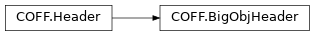
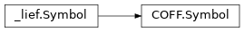
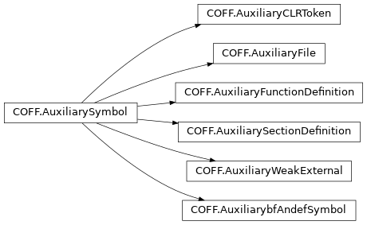
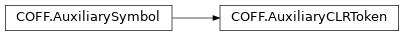
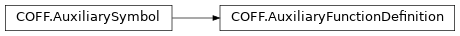
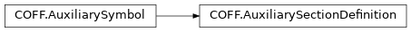

Parse the COFF binary specified in the first parameter and return a lief.COFF.Binary object
The second argument is an optional configuration that can be used to define which part(s) of the COFF should be parsed or skipped.
Bases: object
Class that represents a COFF Binary
Overloaded function.
disassemble(self, function: lief._lief.COFF.Symbol) -> Iterator[Optional[lief._lief.assembly.Instruction]]
Disassemble code for the given symbol
func = binary.find_demangled_function("int __cdecl my_function(int, int)"); insts = binary.disassemble("main"); for inst in insts: print(inst)See also
disassemble(self, function_name: str) -> Iterator[Optional[lief._lief.assembly.Instruction]]
Disassemble code for the given symbol name
insts = binary.disassemble("main"); for inst in insts: print(inst)See also
Disassemble code from the provided bytes
raw = bytes(binary.get_section(".text").content)
insts = binary.disassemble_from_bytes(raw);
for inst in insts:
print(inst)
See also
Try to find the function (symbol) with the given demangled name
Try to find the function (symbol) with the given name
Try to find the COFF string at the given offset in the COFF string table.
Warning
This offset must include the first 4 bytes holding the size of the table. Hence, the first string starts a the offset 4.
Iterator over the functions implemented in this COFF
The COFF header
Bases: object
Iterator over lief._lief.COFF.Symbol
Bases: object
Iterator over lief._lief.COFF.Relocation
Bases: object
Iterator over lief._lief.COFF.Section
Bases: object
Iterator over lief._lief.COFF.String
Bases: object
Iterator over lief._lief.COFF.Symbol
Iterator over all the relocations used by this COFF binary
Iterator over the different sections located in this COFF binary
Iterator over the COFF’s strings
Iterator over the COFF’s symbols
Bases: object
Class that represents the COFF header. It is subclassed by
RegularHeader and BigObjHeader for normal vs
/bigobj files
Duplicate the current instance of this object
The type of this header: whether it is regular or using the /bigobj
format
The machine type targeted by this COFF
The number of sections
Number of symbols (including auxiliary symbols)
Offset of the symbols table
Timestamp when the COFF has been generated

Bases: Header
This class represents the header for a COFF object compiled
with /bigobj support (i.e. the number of sections can exceed 65536).
The raw definition of the bigobj header is located in winnt.h and named
ANON_OBJECT_HEADER_BIGOBJ
1 means that it contains metadata
Offset of CLR metadata
Size of CLR metadata
Size of data that follows the header
Originally named ClassID, this uuid should match:
{D1BAA1C7-BAEE-4ba9-AF20-FAF66AA4DCB8}.
The version of this header which must be >= 2
Bases: Section
This class represents a COFF section
Bases: object
This class wraps comdat information which is composed of the symbol associated with the comdat section and its selection flag
The characteristics that describe the purpose of the section
characteristics as a list
Return comdat infomration (only if the section has the
lief.PE.Section.CHARACTERISTICS.LNK_COMDAT characteristic)
True if the section has the given characteristic
Whether there is a large number of relocations whose number need to be stored in the virtual address attribute
True if the section can be discarded as needed.
This is typically the case for debug-related sections.
Bases: object
Iterator over lief._lief.COFF.Relocation
Bases: object
Iterator over lief._lief.COFF.Symbol
The number of line-number entries for the section. This value should be zero for an image because COFF debugging information is deprecated.
Number of relocations.
Warning
If the number of relocations is greater than 0xFFFF (maximum value for 16-bits integer), then the number of relocations is stored in the virtual address attribute.
The file pointer to the beginning of line-number entries for the section. This is set to zero if there are no COFF line numbers. This value should be zero for an image because COFF debugging information is deprecated and modern debug information relies on the PDB files.
Offset to the section’s content
Offset to the relocation table
Iterator over the relocations performed in this section
Return the size of the data in the section.
Iterator over the symbols associated with this section
Virtual size of the section (should be 0)
Bases: Relocation
Bases: Enum
Section in which the relocation takes place
Symbol associated with the relocation (if any)
Symbol index associated with this relocation
Type of the relocation
Bases: object
This class represents a string located in the COFF string table.
Some of these strings can be used for section’s name where its lenght is greater than 8
bytes. See: coff_string.
Reference: https://learn.microsoft.com/en-us/windows/win32/debug/pe-format#coff-string-table
The offset of this string the in the COFF string table. This offset includes the first 4-bytes that holds the table size
The actual string

Bases: Symbol
Class that represents a COFF symbol.
Warning
The lief.Symbol.value should be interpreted in perspective of
the storage_class
Reference: https://learn.microsoft.com/en-us/windows/win32/debug/pe-format#coff-symbol-table
Bases: Enum
Bases: Enum
Bases: Enum
Reference: https://learn.microsoft.com/en-us/windows/win32/debug/pe-format#storage-class
Auxiliary symbols associated with this symbol.
The simple (base) data type
COFF string used to represents the (long) symbol name
The complex type (if any)
Demangled representation of the symbol or an empty string if it can’t be demangled
Bases: object
Iterator over lief._lief.COFF.AuxiliarySymbol
Section associated with this symbol (if any)
The signed integer that identifies the section, using a one-based index into the section table. Some values have special meaning:
indicates that a reference to an external symbol is defined elsewhere. A value of non-zero is a common symbol with a size that is specified by the value.
address.
not correspond to a section. Microsoft tools use this setting along
with .file records
Storage class of the symbol which indicates what kind of definition a symbol represents.
The symbol type. The first byte represents the base type (see: base_type)
while the upper byte represents the complex type, if any (see: complex_type).

Bases: object
Class that represents an auxiliary symbol.
An auxiliary symbol has the same size as a regular lief.PE.Symbol
(18 bytes) but its content depends on the the parent symbol.
Bases: Enum
Type discriminator for the subclasses
Duplicate the current instance of this object
For unknown type only, return the raw representation of this symbol

Bases: object
Class that represents an auxiliary symbol.
An auxiliary symbol has the same size as a regular lief.PE.Symbol
(18 bytes) but its content depends on the the parent symbol.
Bases: Enum
Type discriminator for the subclasses
Duplicate the current instance of this object
For unknown type only, return the raw representation of this symbol

Bases: AuxiliarySymbol
This auxiliary symbol marks the beginning of a function definition.
Padding value (should be 0)
The file offset of the first COFF line-number entry for the function, or zero if none exists (deprecated)
The symbol-table index of the record for the next function. If the function is the last in the symbol table, this field is set to zero
The symbol-table index of the corresponding .bf (begin function)
symbol record.
The size of the executable code for the function itself.
If the function is in its own section, the SizeOfRawData in the section
header is greater or equal to this field, depending on alignment consideration
Bases: AuxiliarySymbol
“Weak externals” are a mechanism for object files that allows flexibility at
link time. A module can contain an unresolved external symbol (sym1), but
it can also include an auxiliary record that indicates that if sym1 is not
present at link time, another external symbol (sym2) is used to resolve
references instead.
If a definition of sym1 is linked, then an external reference to the
symbol is resolved normally. If a definition of sym1 is not linked, then all
references to the weak external for sym1 refer to sym2 instead. The external
symbol, sym2, must always be linked; typically, it is defined in the module
that contains the weak reference to sym1.
Reference: https://learn.microsoft.com/en-us/windows/win32/debug/pe-format#auxiliary-format-3-weak-externals
Bases: Enum
The symbol-table index of sym2, the symbol to be linked if sym1 is not
found.
Bases: AuxiliarySymbol

Bases: AuxiliarySymbol
This auxiliary symbol exposes information about the associated section.
It duplicates some information that are provided in the section header
Bases: Enum
Values for the AuxiliarySectionDefinition::selection attribute
See: https://learn.microsoft.com/en-us/windows/win32/debug/pe-format#comdat-sections-object-only
The checksum for communal data. It is applicable if the
IMAGE_SCN_LNK_COMDAT flag is set in the section header.
The size of section data. The same as SizeOfRawData in the section header.
The number of line-number entries for the section.
The number of relocation entries for the section.
Reserved value (should be 0)
One-based index into the section table for the associated section. This is used when the COMDAT selection setting is 5.
The COMDAT selection number. This is applicable if the section is a COMDAT section.
Bases: AuxiliarySymbol
This auxiliary symbol represents a filename (auxiliary format 4)
The lief.Symbol.name itself should start with .file, and this
auxiliary record gives the name of a source-code file.
Reference: https://learn.microsoft.com/en-us/windows/win32/debug/pe-format#auxiliary-format-4-files
The associated filename
Check if the given file is a COFF